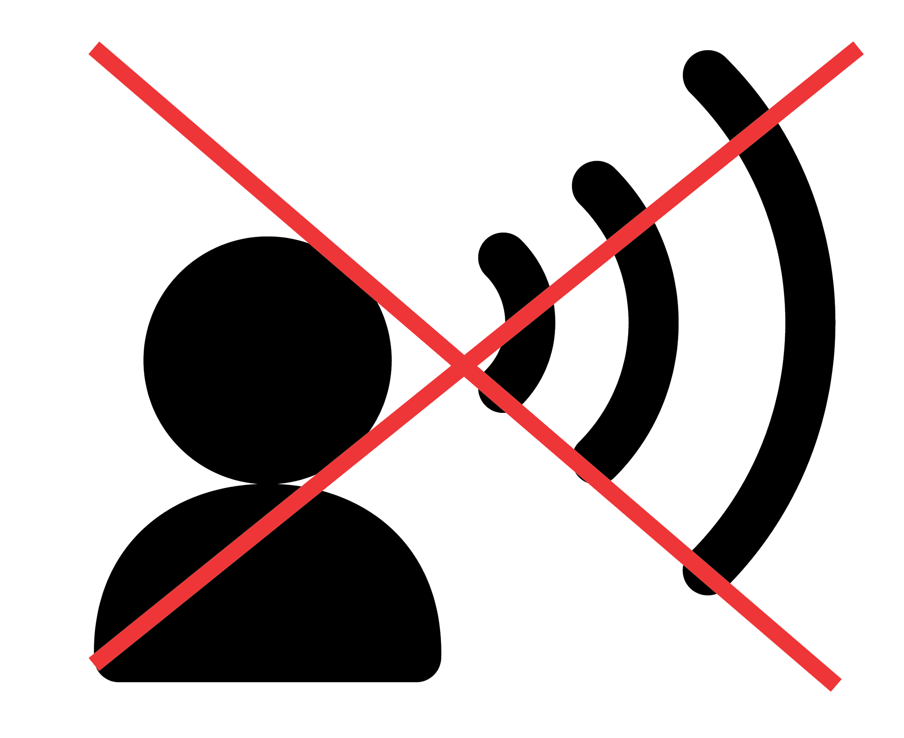
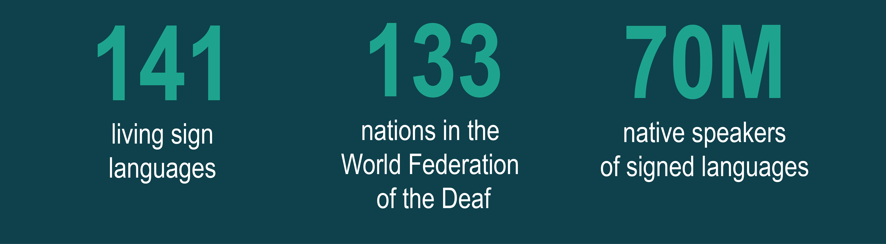

About
Through our day-to-day lives it has become apparent that little is understood - and a lot is assumed - about deaf culture in society. This lack of knowledge has lead to ignorance, and the creation of myths and misconceptions about this community. Our intent with this website is to dispel common misconceptions about hearing loss, and the deaf community, to minimize the generalizations passed down from person to person.
Looking for the answer to a specific question, or just have a general interest? For easy navigation to your topic of choice, we encourage you to explore with just a click at the menu bar above. Feel free to scroll through the entire page and read it all as well.
Thank you for visiting Simple and Cool Design's Final Project Website. Happy reading!
Terminology
Terms to use
deaf:
Medical term for individuals who have little or no functional hearing, but do not identify with the Deaf community
Medical term for individuals who have little or no functional hearing, but do not identify with the Deaf community
Deaf (with a capital "D"):
Medical term for individuals who are medically deaf or hard of hearing who participate in Deaf culture/society (based in Sign Language)
Medical term for individuals who are medically deaf or hard of hearing who participate in Deaf culture/society (based in Sign Language)
deafened:
Medical term for individuals who have become deaf in their later years; they may or may not participate in Deaf communities
Medical term for individuals who have become deaf in their later years; they may or may not participate in Deaf communities
Terms to avoid
Hearing Impaired:
Hearing condition. Does not distinguish between Deaf and Hard of Hearing communities; should never be use as a collective noun
Hearing condition. Does not distinguish between Deaf and Hard of Hearing communities; should never be use as a collective noun
Deaf-mute:
Inappropriate term; a deaf individual can choose not to use his/her voice; this does not make him/her mute
Inappropriate term; a deaf individual can choose not to use his/her voice; this does not make him/her mute
Deaf-plus:
Historical term for a deaf individual who has other disabilities; better terminology is “deaf with mental disabilities”
Historical term for a deaf individual who has other disabilities; better terminology is “deaf with mental disabilities”
Speech
Misconception: Deaf people cannot speak at all.

Reality
Some deaf individuals have clear and modulated speech. Just because they are
Deaf or hard of hearing, doesn’t mean they aren’t able to speak normally.
Communication Misconceptions

Teaching:
Myth - Deaf or hard of hearing individuals were taught how to speak in schools.
Truth - This is a long process. Let the individual communicate in whichever way they are comfortable with.
Myth - Deaf or hard of hearing individuals were taught how to speak in schools.
Truth - This is a long process. Let the individual communicate in whichever way they are comfortable with.

Sign Language:
Myth - all Deaf or hard of hearing people can understand sign language.
Truth - This is based on preference of the individual. If you don’t know just ask.
Myth - all Deaf or hard of hearing people can understand sign language.
Truth - This is based on preference of the individual. If you don’t know just ask.

Lip Reading:
Myth - all Deaf and hard of hearing individuals can read lips.
Truth - Lip Reading is very difficult, and it is said that only 30% of the conversation occuring is understood.
Myth - all Deaf and hard of hearing individuals can read lips.
Truth - Lip Reading is very difficult, and it is said that only 30% of the conversation occuring is understood.
Age
Misconception: Almost all people affected by hearing loss are the elderly.
Reality
The fact that someone is young does not mean they cannot be impacted by a form of hearing loss. 40% of the 48 million people in the US that have a form of hearing loss are younger than 60. Approximately 6 million people from age 18-44 have hearing loss, and more than 1 million are people who are school age.
Types of Hearing Loss
Conductive:
affects the ear canal, eardrum, or middle ear with its small bones
affects the ear canal, eardrum, or middle ear with its small bones
Sensorineural:
affects the inner ear and is related to nerves and their functions. Among this type is one kind of hearing loss directly associated with age known as presbycusis
affects the inner ear and is related to nerves and their functions. Among this type is one kind of hearing loss directly associated with age known as presbycusis
Mixed:
a combination of conductive and sensorineural hearing loss with elements from each type
a combination of conductive and sensorineural hearing loss with elements from each type
Sign Language
Misconception: Sign Language is a single language used all over the world.
Number of sign languages per continent
Reality
There are hundreds of distinct signed languages in use around the world. Just like spoken languages, signed languages develop naturally over time. For this reason, the signed languages spoken in different regions of the world differ dramatically from each other.
Quick Sign Language Facts
